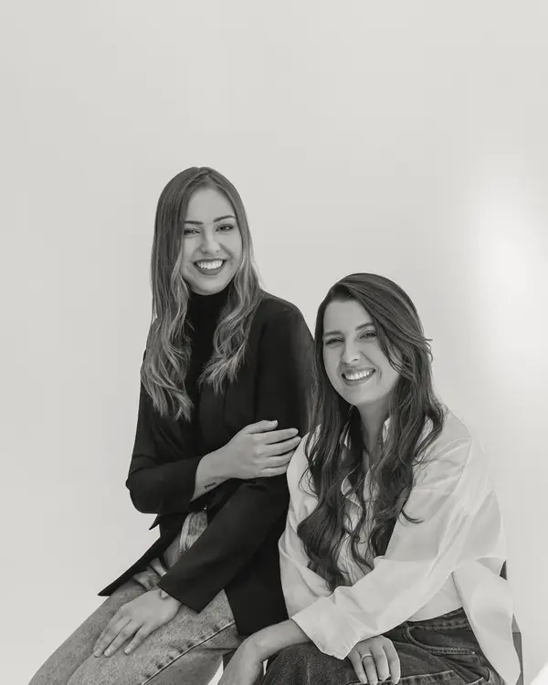
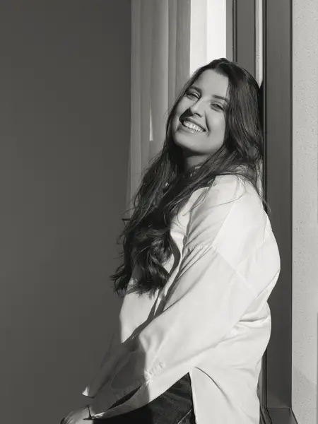
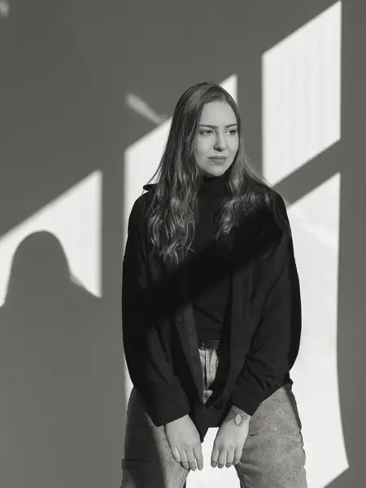
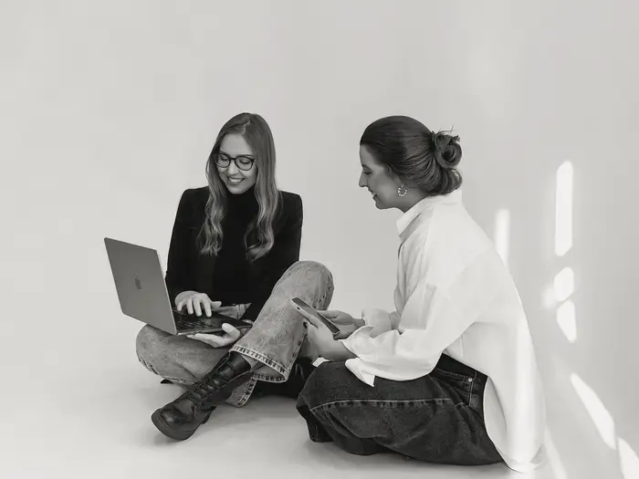

Branding · Posicionamento · Storytelling
Closer
Branding
Pessoas e marcas, na sua essência.
Ajudamos pessoas e marcas a colocarem em palavras e imagens quem elas realmente são.

Acreditamos que toda marca forte nasce do autoconhecimento.
Antes de comunicar, é preciso compreender quem se é.
A estética existe para expressar uma essência, nunca para substituí-la.
Quem somos
Duas mulheres, estratégia & criação.
Uma agência criada por duas mulheres que decidiram unir estratégia & criação para fazer branding de um jeito diferente: olhando primeiro para a essência, antes da estética.


Para quem é
- Para profissionais que querem se posicionar com verdade.
- Para marcas que querem comunicar com clareza.
- Para quem está cansado de comunicação genérica.
O que fazemos
Afinal, o que fazemos?
- 01
Consultoria de imagem
Conectamos elementos visuais e comunicação para que a imagem transmitida seja coerente com o posicionamento.
- 02
Planejamento estratégico
Definimos as melhores estratégias de comunicação, analisamos oportunidades e organizamos ações e conteúdos para alcançar os objetivos da marca.
- 03
Posicionamento de imagem
Análises, diagnósticos, pesquisas e estudos de comportamento dentro do nicho, para que a marca seja percebida por aquilo que carrega em sua essência.
- 04
Direção criativa para redes sociais
Um conceito visual e criativo consistente, com cada publicação alinhada a essa identidade.
- 05
Criação de artes estáticas e carrosséis
Peças visuais que geram interesse e valorizam a mensagem da marca.
- 06
Produção de vídeos para Reels
Planejamento, roteiro, captação e edição de vídeos curtos que transformam ideias em conteúdos dinâmicos.
- 07
Organização visual da comunicação
Estrutura para que todos os materiais mantenham unidade, coerência e reconhecimento.
Como trabalhamos
Existe método por trás da essência.
-
Diagnóstico
Entendemos quem você é, seu nicho e como está sendo percebido hoje.
-
Estratégia
Definimos posicionamento, mensagens e planejamento de conteúdo.
-
Criação
Identidade visual, artes, carrosséis e vídeos alinhados à sua essência.
-
Gestão
Publicação, acompanhamento e ajustes contínuos.

Cases
Essência que virou posicionamento.
Alguns perfis que construímos de perto. Veja como era e como está.
No nosso Instagram
@closer.branding
Agora que você já sabe que pode contar com a gente, não perde mais tempo.
Ficaremos muito felizes de tirar suas dúvidas e te fazer entender que você e sua marca valem muito.